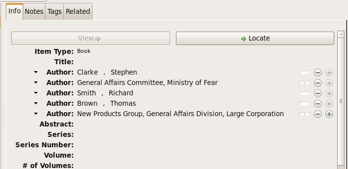
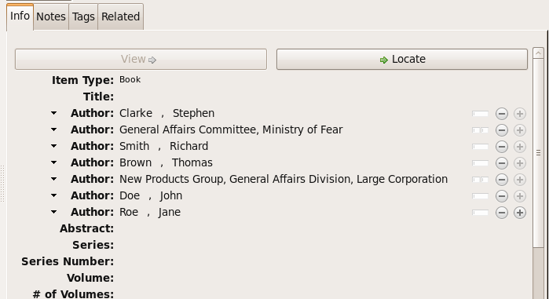

CSL-M: extensions to CSL
 Frank Bennett <https://twitter.com/fgbjr>_
Frank Bennett <https://twitter.com/fgbjr>_
This supplement is a companion to the CSL 1.0.1 Specification. It is aimed at style authors, and documents differences between official CSL and the CSL-m schema recognised by Multilingual Zotero.
The changes are of two types:
Modifications alter the behaviour or validation rules of existing CSL elements or attributes. Changes of this kind can cause official CSL repository to fail validation under the CSL-m schema: such styles will run, but may produce unexpected results. The potential effects of this category of changes are indicated where relevant.
Extensions add entirely new elements or attributes to the schema. Styles making use of extended syntax will fail validation under the official CSL schema, and can be used only with Multilingual Zotero.
Item Types
classic
Use the classic type for sources commonly cited within a field. Cites
of this type do not appear in the bibliography, and can be completely
reformatted to a compact, style-specific form using the Classic
abbreviation list in the Abbreviation Filter.
When a short form is supplied for a Classic item, the title
variable is suppressed, and the short form entirely replaces the
author variable. When a volume number or other details are included,
these can be rendered on either side of the composite abbreviated form,
but not of course within it.
<choose>
<if type="classic">
<group delimiter=" ">
<text variable="volume"/>
<group delimiter=", ">
<names variable="author"/>
<text variable="title"/>
</group>
</if>
</choose>
hearing
The hearing type is primarily intended for transcripts of official
hearings by government committees and the like (other documents
produced by a committee should be cast as the report type
instead). The body conducting a hearing is set in the authority
variable (Legis. Body in MLZ).
<choose>
<if type="hearing">
<text macro="hearing-mac"/>
</if>
</choose>
legal_commentary
The legal_commentary type carries the same fields as
chapter, but as a separate type, it enables separate
control via the consolidate-containers attribute, q.v.
regulation
Use the regulation type for administrative orders at all
levels of government.
<choose>
<if type="regulation">
<text macro="hearing-mac"/>
</if>
</choose>
video
The video type is appropriate for video works that are not
disseminated through an access-restricted distribution channel. For
example, content hosted on YouTube should be set to video, while
a DVD release of “The Wizard of Oz” should be set to motion_picture.
<choose>
<if type="regulation">
<text macro="hearing-mac"/>
</if>
</choose>
Elements
law-module
The cs:law-module element can be set within a Jurism style module, as
the last child of its cs:info element. The element takes one mandatory
attribute, types, with a space-delimited list of legal item types as
its value:
<law-module types="legislation report legal_case hearing"/>
cs:court-class
One or more cs:court-class elements may be set as children of a
locale declaration:
<locale>
<court-class name="admin" country="fi" courts="hao kho"/>
</locale>
The name attribute is the name assigned to the courts class, and
is output as the court-class variable on cs:text and
cs:key elements (see court-class (extension)). It is also used
as the match value for the court-class condition (see court-class
[condition] (extension)).
The country attribute in the example above is the first element of
the jurisdiction value set on the item, if any. For example, the
country value for the jurisdiction fi:helsinki will be fi.
The courts attribute is a space-delimited list of court IDs
assigned by the Legal Resource Registry.
The class name is assigned to an item when the country value
and one of the IDs in courts matches the jurisdiction and
authority values on the item.
As noted above, the name assigned to a set of courts by the
court-class element serves two roles:
key role: It provides a value for an eponymous variable on the
cs:keyelement for use in sorting.condition role: It is used by an eponymous test attribute to check whether the current item is or is not a member of one or more classes.
When set in a style module, the setting applies to the key role
only. When set in the calling style, the setting applies to the
condition role only. The two settings are independent, but confusion
is unlikely because court-class conditions are used almost
exclusively in style modules (and the same style module, at that); and
court-class sort keys are used only in the calling style.
cs:conditions
Condition statements in official CSL take a single “match” attribute,
which determines how the tests will be combined. The match attribute
value (all, any, none) applies to all tests within the
statement: grouping of tests with separate match values is not possible.
To simplify the coding of complex styles, CSL-m introduces an optional
alternative syntax for condition statements.
The alternative syntax may be applied to cs:if or cs:else-if
elements (the “parent node” in this description). The parent node must
have no attributes, and a single cs:conditions node as its first
child element. The cs:conditions node must have one or more
cs:condition children. The cs:condition children each define a
conditional statement with attributes specified in the CSL 1.0.1
schema and in this Supplement. The cs:condition statements are
joined according to a mandatory “match” attribute on
cs:conditions.
Note that CSL-m adds a “nand” match value (true if at least one of the tests or condition statements to which it applies returns false), in addition to “all”, “any”, and “none”.
<choose>
<if>
<conditions match="any">
<condition type="chapter"/>
<condition variable="container-title collection-title" match="nand"/>
</conditions>
<text macro="some-chapter-mac"/>
</if>
</choose>
cs:institution and friends
Element: cs:institution
A cs:institution element can be placed immediately after the
cs:name element to control the formatting of institution
names.
Attributes: delimiter and and
The value of the delimiter attribute on cs:institution
is used in the following locations:
between institution names;
between the subunits of an institution;
between affiliated authors and their institution.
The and attribute on cs:institution, if any, is used for the
final join between two or more author/institution units.
A simple use of cs:institution might read as follows:
<names variable="author">
<name and="symbol" initialize-with=". "/>
<institution and="text" delimiter=", ">
</names>
With this CSL, all of the delimiters in the following string would be
drawn from attributes on cs:institution: R. Smith, Small
Committee, Large Corporation, G. Brown, Busy Group, Active Laboratory,
and S. Noakes, Powerful Ministry.
Attributes: use-first, substitute-use-first and use-last
To control the omission of names from the middle of the list of
institutional subunits, either of use-first or
substitute-use-first may be used to pick names from the front of
the list. The use-last attribute picks names from the end. The
substitute-use-first attribute includes the leading (smallest)
subunit if and only if no personal names are associated with the
institution.
The following CSL code would format both example 1 and example 5 from the list of samples at the top of this section:
<names variable="author" delimiter=", ">
<name
and="symbol"
delimiter-precedes-last="never"
et-al-min="3"
et-al-use-first="1"/>
<et-al term="and others"/>
<institution
delimiter=", "
substitute-use-first="1"
use-last="1"/>
</names>
Attribute: reverse-order
By convention, institutional names are rendered in “big endian”
order, from the smallest to the largest institutional unit. To
provide for cases such as example 2 in the list of samples, a
reverse-order attribute can be applied on cs:institution:
<names variable="author" delimiter=", ">
<name/>
<institution
delimiter=" - "
use-first="1"
use-last="1"
reverse-order="true"/>
</names>
Attribute: institution-parts
The components of names are normally rendered in their
long form only.
To use the short form, or combinations of the long and short form, an
institution-parts attribute is available on cs:institution.
The attribute accepts values of long, short, short-long
and long-short. A value of short behaves in the same
way as form="short" in other contexts in CSL, using the short form
if it is available, and falling back to the long form otherwise.
Element: cs:institution-part
One or more cs:institution-part elements can be used to control the
formatting of long and short forms of institution names. Like
cs:name-part, these elements are unordered, and affect only the
formatting of the target name element, specified (as on cs:name-part)
with a required name attribute.
Attribute: if-short
In example 3, the parentheses should be included only if a short form
of the institution name is available. The if-short attribute,
available on cs:institution-part only when applied to the long
form of an institution name, makes the formatting in the element
conditional on the availability of a short form of the name. The
following CSL would render example 3 in the list of samples:
<names variable="author">
<name/>
<institution institution-parts="short-long">
<institution-part name="long" if-short="true" prefix=" (" suffix=")"/>
</institution>
</names>
cs:layout
In publishing outside of the English language domain, citation of foreign material in the style of the originating language is the norm. For example, a Japanese publication might include the following references in a single work:
D. H. McQueen, “Patents and Swedish University Spin-off Companies: Patent Ownership and Economic Health”, Patent World, March 1996, pp.22–27.
北川善太郎「著作権法１００年記念講演会／著作権制度の未来像」コピーマート No.465, 7頁 (2000年)。
To meet such requirements, the MLZ extensions to CSL permit multiple
cs:layout elements within cs:citation and cs:bibliography.
Each cs:layout element but the last must include a locale attribute
specifying one or more recognized CSL locales, and the final element must
not carry a locale attribute. The locale applied to an item is determined
by matching it against the locale set in the language variable of
the item (this value is passed by Zotero). An example:
<citation>
<layout locale="en es de">
<text macro="layout-citation-roman"/>
</layout>
<layout locale="ru">
<text macro="layout-citation-cyrillic"/>
</layout>
<layout>
<text macro="layout-citation-ja"/>
</layout>
</citation>
In the example above, an item with en, es
or de (or de-AT) set in the language
variable will be render by the layout-citation-roman
macro, with locale terms set to the appropriate language.
Variables
commenter
The commenter variable is available as a name.
contributor
The contributor variable is available as a name.
committee
The committee variable is handled as a string.
country
The country variable is a virtual variable, not included in input,
that is set as the first colon-delimited element of jurisdiction.
document-name
The document-name variable is available on the legal_case type,
and it used for the title of documents filed in court in the context of a given
case. It is handled as a string.
first-container-reference-note-number
The first-container-reference-note-number has a value only on
items for which tracking has been enable via the track-containers
attribute on cs:style or implicitly by the consolidate-containers
attribute on cs:bibliography. Its value is the first note number
citing to the same container as the current item.
Note that if the container is cited explicitly (as title, not as
container-title), this variable will not point at that item,
but at the first matching item of the same type.
language-name
The ISO (or BCP 47) language code of the resource. The value is set to the
target of a vector symbol (> or <) in the language field,
and is otherwise undefined.
language-name-original
The ISO (or BCP 47) language code of the resource. The value is set to the
source of a vector symbol (> or <) in the language field,
and is otherwise undefined.
available-date
The CSL-m available-date variable is appropriate for the date on
which a treaty was made available for signing.
<group delimiter=" ">
<text value="opened for signature" font-style="italic"/>
<date date-parts="year-month-day" form="text" variable="available-date"/>
</group>
hereinafter
The hereinafter variable is a backreference form specific to a
particular item and style. In MLZ, it can be set only through the
Abbreviation Filter. The role of the variable in a given cite
(i.e. whether it provides an alternative title, an acronym or a
more complete formatted citation) depends on the the style and context.
<choose>
<if match="all" type="bill gazette legislation" variable="hereinafter">
<text variable="hereinafter"/>
</if>
<else>
<text variable="title" form="short"/>
</else>
</choose>
The Abbreviation Filter will offer an entry in the hereinafter list
for every item cited in the document. It is not necessary to use form="short"
on the cs:text node that renders the variable.
locator
In CSL-m, locator is a numeric variable. Validation requires that
it be rendered with cs:number.
<number variable="locator"/>
The locator variable will render exactly once in a citation;
subsequent attempts will render nothing. As with variables suppressed
via cs:substitute, the test for variable="locator" will
continue to return true after the variable is suppressed from
further output.
locator-date and locator-extra
The variable “locator-date” is parsed out from the user-supplied locator, using the following syntax:
123|2010-12-01
In this example, “123” is the value of the locator variable
(a page or other pinpoint string), the | character marks the
end of the pinpoint, and the ten-character string immediately
following is a full date. If supplied, dates must be given as shown above,
zero-padded, in year-month-day order, and with no space between
the date and the | character. Non-conforming strings following
the | marker will be treated as a locator-extra variable.
The locator-extra variable consists of a string that is not a
date, following the locator-date string (if any) as described
above. If supplied without a locator-date, the
locator-extra string must be preceded by a | field
separator character. This variable can be used for version
descriptions associated with some looseleaf services.
These extensions are useful with looseleaf services, because the dates of the content in these services varies depending on the page cited and the time at which the resource was referenced. These extensions permit a single item in the calling application’s database to represent the volume on the library shelf, the page date being optionally supplied by the user when citing into a document.
page and page-first
The page and page-first variables are numeric in CSL-m.
The validator requires that they be rendered with cs:number.
<number variable="page"/>
publication-date
CSL-m adds a publication-date variable to the language schema.
It is available on the gazette, legal_case, legislation, patent
and regulation types, and provides the date on which the instrument
was published in the given reporter. On the patent type, it represents
the date on which the patent was published for opposition (applicable only in certain
jurisdictions).
<date date-parts="year-month-day" form="text" variable="publication-date"/>
publication-number
The publication-number variable is available on the patent type,
and provides the number assigned to a patent published for opposition.
It is a numeric variable, and validation requires that it be rendered
with cs:number.
<number variable="publication-number"/>
supplement
The supplement variable and its associated locale term are useful
for secondary sources that are regularly updated between fresh
editions. Such fine-grained updates are found in secondary legal
publications. Although a supplement may be identified by number or by
name, supplement is a numeric variable, and validation requires
that it be rendered with cs:number.
<choose>
<if is-numeric="supplement">
<group delimiter=" ">
<label variable="supplement"/>
<number variable="supplement"/>
</group>
</if>
<else>
<number variable="supplement"/>
</else>
</choose>
division
The division variable is available on items of the legal_case
type. it is used to add minor subdivisions of a court that are not
captured by jurisdiction/court identifiers and their associated
abbreviations.
gazette-flag
The gazette-flag variable is available on the statute and
regulation types. It functions as a boolean, and should not be
rendered. Set it with a value to indicate that the record refers to
a statute and published in an official gazette (rather than a
codified version of the same law).
volume-title
The volume-title variable is available on items of the book
and chapter type. Use it to identify the name of a volume within a
larger work known by an umbrella title (which may in turn be a part of
a publisher’s series, described by collection-title).
<text variable="volume-title"/>
court-class
court-class is a virtual variable enabled by setting a court-class
element in the locale (typically the default locale) of the style.
If the jurisdiction and authority values on the item match values
set on the locale declaration, the name of the class is output. Non-matching
items output an empty string.
For information on the locale declaration, see cs:court-class (extension) above. See also court-class [condition] (extension) for information on the related test attribute.
Attributes
track-containers
The track-containers attribute can be set on cs:style, and
takes a list of item types as argument. A count of items within containers
of the designated item type will be available for use by the
container-multiple condition.
The consolidate-containers attribute on cs:bibliography
implicitly sets tracking as well, and the tracking list set by the two is
cumulative.
consolidate-containers
The consolidate-containers attribute can be set on cs:bibliography, and
takes a list of item types as argument. For the designated item types, it
implicitly invokes track-containers, and renders only a single item
in the bibliography for each container in the input.
disable-duplicate-year-suppression
By default, when the numeric value of collection-title exactly matches
a subsequent rendering of issued with date-parts="year", the latter
is suppressed. This is useful for styles (found in Canada and possibly
elsewhere) that show the actual year of decision only when it differs from
the year-volume in which it is published. In some jurisdictions, suppression
is not desired, however. In such cases, disable-duplicate-year-suppression
can be set on cs:style, with one or more country codes as argument.
form="imperial"
On the cs:date element, this form option renders the date in
Japanese Imperial form. Only dates of the modern era (明治 to 令和) are supported.
jurisdiction-preference
On a cs:style-options element under cs:local, the value of this attribute
is a space-delimited list of jurisdiction variant extensions, from highest to lowest
priority. Where available, a specified variant is applied when selecting style modules
and associated abbreviation sets.
require-match
The require-match attribute is available on cs:names elements.
When set to true, it takes effect if and only if exactly two
variables are called by the element, and the current locale contains a
term (such as editortranslator) that matches the sorted and
concatenated variable names. If those conditions are not satisfied,
the variables will be rendered according to the standard CSL
Specification. If the conditions are satisfied, the attribute has
the following effects:
If the content of the name variables match exactly, the matching content will be rendered once, using the matching term as label. This is in accordance with the standard CSL Specification.
Otherwise, the variables will not be rendered, and processing will proceed to
cs:substitute, and the two variables called oncs:namesremain available for rendering.
This can be useful where and editor and a translator, for example, should be rendered as a unit if they refer to the same person, but in separate parts of the citation if they differ.
exclude-types
The exclude-types option is available on the cs:bibliography
element. Use it to specify a list of item types that are to be
excluded from the bibliography.
form="imperial"
CSL-m allows conversion of ordinary Gregorian dates to the Japanese form often used in legal citations and other government records. The conversion is only valid for dates after 1873. Prior dates on the traditional lunar calendar are not supported, and should be written as literal strings in the input.
<date variable="issued" form="imperial" date-parts="year-month-day"/>
form="short"
In CSL 1.0.1, rendering the title variable with the attribute
form="short" produces the same result with any item type: if the
title-short variable has a value, that it used; otherwise the
title variable is rendered as a fallback.
In CSL-m, on the legal_case type only, the form="short"
attribute does not attempt to render title-short, but instead
renders the title variable, transformed by the Abbreviation Filter
if an entry for it exists in the list there. This permits the
application of style-specific abbreviation rules, as required by
law-specific style guides such as The Bluebook: A Uniform System
of Citation.
<text variable="title" form="short"/>
Parallel citation and suppressing repetition
parallel-first
The parallel-first attribute on cs:group takes a list of variables
as argument, and takes effect only on a consecutive series of cites
within a citation that a members of a related group, where group membership
is determined from a list of IDs on the first cite in each series.
The effect of parallel-first is to suppress the group if the
values of all of the listed variables match those in the immediately
preceding cite.
parallel-last
Like its counterpart above, the parallel-last attribute on
cs:group takes a list of variables as argument, and takes effect
only on a consecutive series of cites within a citation that a members
of a related group, where group membership is determined from a list
of IDs on the first cite in each series.
The effect of parallel-last is to suppress the group if the
values of all of the listed variables match those in the immediately
following cite.
parallel-last-to-first
The parallel-last-to-first attribute on cs:group takes a list
of variables as argument. It changes the handling of the listed
variables in following cites in a related series from
parallel-last to parallel-first.
no-repeat
The no-repeat attribute is valid on cs:group elements, and takes a list
of variable names as argument. The attribute blocks rendering
of the group if the variables given in its argument all have the same
value as in the preceding cite. It takes effect only when the current
cite is not a member of a related series.
parallel-delimiter-override
When used with the parallel-first, parallel-last, or no-repeat attributes,
parallel-delimiter-override replaces the layout delimiter joining
all members of a related series, or cites for which no-repeat suppresses
output.
parallel-delimiter-override-on-suppress
When used with the parallel-first, parallel-last, or
no-repeat attributes, parallel-delimiter-override-on-suppress
replaces the layout delimiter joining parallel sibling cites for which
the group is suppressed, and cites for which no-repeat suppresses
output.
require and reject
Attributes of cs:group for use in conditional rendering of
locators. Both attributes take one of three arguments, each
representing a set of pre-bundled tests. require renders the group
only if the tests return true; reject renders the group only
if the tests return false. The bundled tests differ in kind from
ordinary cs:choose conditions, in that they examine field
content. A cs:label variable, or cs:text value or term is
ordinarily the first rendering element within the group. Other
elements may follow, as in the following example:
<group delimiter=" ">
<group delimiter=", ">
<text variable="container-title"/>
<group delimiter=" " require="comma-safe">
<choose>
<if locator="page" match="none">
<label variable="locator"/>
</if>
</choose>
<number variable="locator"/>
</group>
</group>
<group delimiter=" " reject="comma-safe">
<choose>
<if locator="page" match="none">
<label variable="locator"/>
</if>
</choose>
<number variable="locator"/>
</group>
</group>
(Note that if a leading term shortcode is set in the locator
field, the leading term evaluated will be that set by the short-code,
not the locator-label set on item input, .)
The predefined conditions are as follows:
comma-safe: evaluates true for require when either of
the following two conditions is satisfied:
when the group is immediately preceded by a number (taking suffixes and
vertical-alignstyling into account) and
cs:text value: the group begins with a literal string label set with
cs:text; or2. no label: the group does not render a localized term at all; or 2. latin label: the group begins with a “romanesque”
localized term (i.e. not a symbol); or
force on symbol: the
require-comma-on-symbollocale attribute is set toalwaysorafter-numberwhen the group is immediately preceded by a non-number (taking affixes and
vertical-alignstyling into account) and
the group begins with a “romanesque” localized term; or
the
require-comma-on-symbollocale attribute is set toalways.
comma-safe-numbers-only: evaluates true for require under any of the following conditions:
1. when the group is immediately preceded by a number (taking suffixes and
vertical-alignstyling into account); and either:
the group itself renders a number with no term label (neither as a localized term nor as a
cs:textliteral string); orthe group renders a number with a localized term label expressed as a symbol, and the style attribute
require-comma-on-symbolis set toalwaysorafter-number.
when the group is immediately preceded by a non-number (taking suffixes and
vertical-alignstyling into account); and: 1. the group renders a localized term label expressed as a symbol,and the style attribute
require-comma-on-symbolis set toalways.
(Note: The empty-label and empty-label-no-decor tests previously documented
here are deprecated.)
label-form
The label-form attribute can be used on cs:number and on
cs:text with the macro attribute. It accepts the same arguments
as the form attribute for localised terms: long, verb,
short, verb-short and symbol. Its effect is to override
the form attribute applicable to terms called via the parent cs:text
or cs:number node. This can be useful where macros are copied
across styles that require different label forms.
<text macro="locator-mac" label-form="symbol"/>
leading-noise-words
When set on a cs:style-options node in a locale file or in a
style, the leading-noise-words attribute takes a comma-delimited
list of words as its argument.
When a list is set, the same attribute on a cs:text node with
variable="title" takes an argument of demote or drop. With
the demote attribute, noise words at the start of the field are
rendered after the remainder of the title field, delimited by a comma.
With the drop attribute the leading noise words are simply
removed.
<style-options leading-noise-words="a,an,the"/>
and
<text variable="title" leading-noise-words="demote"/>
name-as-sort-order
A name-as-sort-order attribute is available on the cs:style-options
locale element, taking a list of space-delimited country codes as its argument.
Country codes in the argument should be limited to a single element
(i.e. the language only, without a country or other specifier): other elements
will be ignored.
When the first element of the field language (either explictly set, or
defaulting to the item language field value, if any) matches one of
the specified locales, the name is forced to “sort order”, regardless of its
character set.
<style-options name-as-sort-order="kr ja zh"/>
The example above will force names tagged as Korean, Japanese, and Chinese to sort order (i.e. family name first). This attribute does not interfere with short-form rendering or abbreviation (see the next heading below for that setting).
name-never-short
The name-never-short attribute on the cs:style-options locale
element takes a list of space-delimited country codes as its
argument. Country codes in the argument should be limited to a single
element (i.e. the language only, without a country or other
specifier): other elements will be ignored.
When the first element of the field language (either explictly set, or
defaulting to the item language field value, if any) matches one of
the specified locales, the effect of form="short" is suppressed
when rendering the name concerned.
<style-options name-never-short="hu kr ja my vi zh"/>
The example above suppresses form="short" on names tagged as
Hungarian, Korean, Japanese, Myanmar, Vietnamese, or Chinese.
prefix and suffix
Ordinary affixes in CSL-m are subject to a restriction: a prefix
attribute may not begin with a space, and a suffix attribute may
not end with a space. Affixes on cs:label within a cs:names
element, and affixes within the scope of a cs:date element are
not subject to this constraint.
The purpose of this requirement is to assure that styles are incapable
of rendering cites with stray punctuation or multiple spaces. Where
spaces are required between elements, they should be applied using
a delimiter attribute value on a cs:group element.
<group delimiter=", ">
<number variable="volume"/>
<text variable="container-title"/>
</group>
skip-words
The processor carries a list of prepositions and other terms that
will not be capitalised when rendering a field with text-case="title".
Within a locale, the skip-words attribute on cs:style-options
can be used to replace this list of terms with another. The attribute
value should be a comma-delimited list of words or phrases.
<style-options skip-words="a,an,the,or,and,over,under"/>
subgroup-delimiter, subgroup-delimiter-precedes-last, and
The subgroup-delimiter attribute is a field-parsing hack coded
into the citeproc-js processor, enabled when the processor is run
in CSL-m mode. In a group containing only cs:text elements rendering
the publisher and publisher-place variables, the processor will
split the content of both fields on a semicolon. If the length of the
resulting list objects is equal, each publisher/publisher-place
pair will be joined with the delimiter string set on the enclosing
cs:group element. The composed pairs are then joined using the
subgroup-delimiter value.
The subgroup-delimiter-precedes-last attribute controls the use of
the delimiter between the last and the penultimate pair in the same
manner as delimiter-precedes-last on a cs:name element. The
and attribute with an argument of text or symbol may be
used on the cs:group element to join the final item with the
specified term.
<group delimiter=" " subgroup-delimiter=", "
subgroup-delimiter-precedes-last="always">
<text variable="publisher"/>
<text variable="publisher-place"/>
</group>
or
<group delimiter=" " subgroup-delimiter=", "
subgroup-delimiter-precedes-last="never"
and="symbol">
<text variable="publisher"/>
<text variable="publisher-place"/>
</group>
suppress-min
In the MLZ extended schema, names can be suppressed in two ways.
First, using suppress-min and suppress-max with values of
1 or above, names rendered via a cs:name element can be
suppressed entirely when the number of individual names is at or below
a minimum, or at or above a maximum.
Second, with a value of 0, suppress-min can be used
on a cs:name or cs:institution element to suppress
only names of that type. See the description of suppress-min
below for an example of how that works and why it might sometimes
be useful.
An example of suppress-min with a value of 4:
<locale xml:lang="en">
<terms>
<term name="and others"></term>
</terms>
</locale>
<macro name="first-position-author">
<names variable="author">
<name et-al-min="2" et-al-use-first="1"
suppress-min="4"
name-as-sort-order="first"/>
<et-al term="and others"/>
</names>
</macro>
<macro name="second-position-author">
<names variable="author">
<name et-al-min="4" et-al-use-first="1" delimiter=", "/>
</names>
</macro>
<citation>
<layout>
<group delimiter=" / ">
<group delimiter=" ">
<text macro="first-position-author"/>
<text variable="title"/>
</group>
<text macro="second-position-author"/>
</group>
</layout>
</citation>
In the above example, an item with two authors will render as follows:
Stamou, A.I. Title of the Article / A.I. Stamou, I. Katsiris
An item with four authors, however, will render as follows:
Title of the Article / A.I. Stamou et al.
suppress-min with a value of 0
When set to zero, the suppress-min attribute is specific to the
cs:name or cs:institution node only (for clarity, the
attribute with this value should always be set directly on the
affected node, rather than relying on inheritance). The effect of the
setting is to suppress all institution or all personal names, leaving
a list of the remaining names in place. This can be useful where
personal and institutional authors must be listed in separate places
in a citation—one example of such formatting being Rule
21.7.3 of the Bluebook 18th ed. (applicable to U.N. reports) which
provides the following guidance and example:
If a personal author is given along with the institutional author, the author [sic] should be included in a parenthetical at the end of the citation.
U.N. Econ. & Soc. Council [ECOSOC], Sub-Comm. on Prevention of Discrimination & Prot. of Minorities, Working Group on Minorities, Working Paper: Universal and Regional Mechanisms for Minority Protection, ¶ 17, U.N. Doc. E/CN.4/Sub.2/AC.5/1999/WP.6 (May 5, 1999) (prepared by Vladimir Kartashkin).
suppress-max
<macro name="authors">
<group delimiter=" ">
<names variable="author">
<name name-as-sort-order="all"
et-al-min="11" et-al-use-first="3"
and="text"/>
</names>
<group delimiter=" " prefix="(" suffix=")">
<names variable="author">
<name suppress-max="10" form="count"/>
</names>
<text value="co-authors"/>
</group>
</group>
</macro>
<citation>
<layout>
<text macro="authors"/>
</layout>
</citation>
In this example, an item with four authors would render as follows:
Doe, J, Roe, J, Noakes, R, and Snoakes, H
An item with eleven authors, on the other hand, would render like this:
Doe, J, Roe, J, Noakes, R, et al. (11 co-authors)
text-case
CSL-m adds a normal argument to the possible values of
text-case. This is mainly useful when rendering a cs:number
element in the scope of an element that applies a text-case
transform, to prevent text content in the rendered variable from being
affected by the transform.
(The need for this attribute value is open to question.)
<number variable="number" text-case="normal"/>
year-range-format
CSL-m offers a year-range-format attribute on cs:style, as a
complement to page-range-format. It takes the same arguments:
expanded, minimal, minimal-two, and chicago. When
used, this attribute specifies a collapsing format for year ranges
separate from that applied to page ranges.
<style xmlns="http://purl.org/net/xbiblio/csl" class="note" default-locale="en-GB"
page-range-format="chicago" year-range-format="expanded"
version="1.1mlz1">
Conditions
is-multiple (extension)
The is-multiple attribute takes a single variable as argument.
The test is true if the variable has a value and contains at least one space,
and otherwise false. (This is useful for setting labels on case docket numbers,
which will contain space if multiple cases have been joined in a single
judgment.)
disambiguate="check-ambiguity-and-backrefence"
An alternate to disambiguate="true" that includes the actual value of
first-reference-note-number (rather than a uniform slug) when evaluating
the condition. This will add the conditional text only when necessary
to disambiguate cites that are ambiguous within a single note.
position="far-note"
The counterpart to position="near-note" that evaluates true if the
cite is more than near-note-distance from the last preceding reference
to the item.
position="container-subsequent"
The container-subsequent argument to the position test
may be invoked after a test for subsequent. It evaluates
true for item types enabled for tracking via the track-containers attribute
on cs:style, or implicitly by the consolidate-containers attribute on
cs:bibliography, where the cited item, even if a first reference to
the specific item, is in the same container as a previously cited item.
container-multiple
The container-multiple condition takes true or false as argument
(typically true). It is meaningful only in the context of cs:bibliography.
For item types enabled for tracking via the track-containers attribute
on cs:style, or implicitly by the consolidate-containers attribute on
cs:bibliography, at test with true evaluates true if more than one item matches
the container (whether consolidated in the bibliography or not).
container-subsequent
In the context of cs:bibliography, the
container-subsequent test with argument true
evaluates true if the item if the entry is preceded by another from
the same container. It is meaningful only for item types enabled for
tracking via the track-containers attribute on cs:style,
or implicitly by the consolidate-containers attribute on
cs:bibliography
context
The context test attribute takes exactly one of the arguments
bibliography, or citation. It does exactly
what its name and value suggest, returning true when the condition is
executed in the relevant context. This test is useful where complex
logic is needed to compose a particular element, which changes only
slightly depending on context.
<choose>
<if context="citation">
<text variable="title" font-variant="small-caps"/>
</if>
<else>
<text variable="title" font-variant="small-caps" form="short"/>
</else>
</choose>
genre
The genre test attribute takes one of five arguments: email,
instant-message, podcast, radio-broadcast, or
television-broadcast. These correspond to strings automatically
inserted into the genre variable by MLZ (where no value is set
manually by the user) on the Email, Instant Message, Podcast,
Radio Broadcast and Television Broadcast types respectively.
This is obviously a hack, and mimicks the effect of having five separate types for these items in CSL, as opposed to two (i.e. personal_communication and broadcast).
<choose>
<if genre="podcast">
<text macro="podcast-mac"/>
</if>
</choose>
has-day
The has-day condition attribute tests whether the date variable given
as argument has a value that includes a day.
<choose>
<if has-day="issued">
<date variable="issued">
<date-part name="month" form="text"/>
<date-part name="day" form="numeric" prefix=" "/>
</date>
</if>
</choose>
has-to-month-or-season
The has-to-month-or-season condition attribute tests whether the date
variable given as argument has a month or season (and no day).
<choose>
<if has-to-month-or-season="issued">
<date variable="issued">
<date-part name="month"/>
</date>
</if>
</choose>
has-year-only
The has-year-only condition attribute test whether the date
variable given as argument has only a year (and no day, month or season).
<choose>
<if has-year-only="issued">
<date variable="issued"
date-parts="year" form="text"
prefix="[" suffix="]"/>
</if>
</choose>
country
The country condition takes a list of top-level Legal Resource
Registry country/institution codes as argument. The condition is
true if the item has a country value that matches a code in the list.
locale
In CSL-m, alternative cs:layout nodes can be set by giving each
a separate locale attribute. See the description of cs:layout (extension)
above for further details.
page
In CSL-m, the page variable can be tested in the same way as
locator. The test evaluates the label value, if any, set at the
start of the field using a recognized locator abbreviation. See
Locator Terms below for a list of recognised abbreviations and
their corresponding CSL-m label values.
<choose>
<if page="page" match="none">
<label form="symbol" variable="page"/>
</if>
</choose>
The cs:label element in this example will render the localised term
for the label set in the page field (e.g. “para. 3” will render
in English as “¶ 3”).
court-class [condition]
The court-class condition takes a single court class name as
argument. (See cs:court-class (extension) for information on the
assignment of court class names).
Locator Terms
Label |
Abbreviation |
Label |
Abbreviation |
|---|---|---|---|
|
|
|
|
|
|
|
|
|
|
|
|
|
|
|
|
|
|
|
|
|
|
|
|
|
|
|
|
|
|
|
|
|
|
|
|
|
|
|
|
|
|
|
|
|
|
|
|
In addition to the extended terms (article, rule, and
title), CSL-m styles automatically set the special alternative
terms Chapter and Section when rendering the corresponding
terms in the context of the first item in a parallel reference.
Deprecated and Decommissioned features
The features below were formerly documented here, but no longer exist or have been deprecated. The reason for withdrawal is given in /italics/ at the top of each entry.
jurisdiction
In CSL-M, special formatting applicable to a specific subjurisdiction should be cast in a jurisdiction style module. Testing for specific subjurisdictions should not be necessary, apart from tests for top-level jurisdictions, covered by the ``country`` condition.
When citing primary legal resources, the form of citation is often
fixed, for ease of reference, by the issuing
jurisdiction— “jurisdiction” referring in this case to
international rule-making bodies as well as national governments.
CSL 1.0.1 provides a jurisdiction variable, but it cannot be used
because Zotero does not currently have a corresponding field.
The particular requirement for this variable is that it be tested in a
cs:if and cs:else-if condition, so that citations can be
varied according to the issuing jurisdiction. Testing of field content
is contrary to the design of CSL, so the approach of the MLZ extended
CSL schema is strictly circumscribed to address this particular need,
without opening a door to uncontrolled general testing of field
content.
The solution is in two parts, described below.
Jurisdiction constraint list
The CSL schema has been extended in accordance with the proposed URN:LEX standard for a uniform resource namespace for sources of law. This standard provides a concept of “jurisdiction” that suits the requirements of legal citation, including both national jurisdictions and international rule-making bodies. Following URN:LEX, the schema has been extended with an explicit list of the national jurisdictions of the world, plus selected rule-making international organizations designated by their permanent domain name. The former are drawn from ISO 3166 Alpha-2. The latter do not yet have official sanction, as URN:LEX is still at the proposal stage, but the list in the schema extension is conservative, including only a few of the most stable (and widely cited) organizations.
Controlled list
The list of acceptable jurisdictions codes is coupled with an
extension of the cs:if and cs:else-if elements, providing a
jurisdiction test attribute. In styles, the value set on the
attribute must be present in the list of acceptable jurisdiction
values. A style that uses other values is invalid.
When the jurisdiction test attribute is used, its value is
compared with the value of the jurisdiction variable on the item
being processed. If the values match, the test returns true, otherwise
false. Matching is done at the granularity of the argument provided
in the test.
<choose>
<if jurisdiction="us">
<text macro="us-mac"/>
</if>
</choose>
The test above will be true for items with a jurisdiction value of
jp or de, and false for values of us, us;federal;oh or us;ny.
cs:institution
These complex grouping features of ``cs:institution`` are disabled in ``citeproc-js``, and the code that was used to implement them will be removed in due course.
Institutional names are fundamentally different in structure from personal names. CSL provides quite robust support for the presentation and sorting of personal names, but in CSL 1.0.1, institutional names have just one fixed form, and are otherwise treated the same as personal names in a list of creators.
Some publishing environments require greater flexibility. Institution names can consist of multiple subunits. Individuals may be credited together with the institution to which they belong. Unaffiliated personal authors may be cited together with an institution or with individuals affiliated with it. Some examples:
Research & Pub. Policy Dep’t, Nat’l Urban League
United Nations - ECLAC
ECLAC (Economic Commission for Latin America and the Carribean)
Canadian Conservation Institute (CCI)
Nolan J. Malone and others, U.S. Bureau of the Census
World Trade Organization and World Health Organization
Smith with Jones, Bureau of Sloth, Ministry of Fear
Doe et al. with Roe et al., Ministry of Fear & Noakes, Ministry of Destruction
Examples 3 and 4 render both the full form and the acronym of a single institution name, with arbitrary ordering of the two name parts. Example 1 begins with the smallest subunit in a list of related institutions, and example 2 does the opposite. Examples 1 and 2 are pure organizations, while example 5 is a mix of personal and institutional names. Examples 1, 2, 3 and 4 would be entered as literal strings currently, which has obvious drawbacks. Example 5 would require that the authorship information be spread across two variables, although all parties listed are equally authors of the resource. Example 6 can be produced in CSL 0.8, but examples 7 and 8 cannot.
The MLZ extensions to CSL 1.0.1 provide a cs:institution element, which can be used to produce any of the above forms, without interfering with the formatting of ordinary personal names. The extension is always enabled in citeproc-js, but the application calling citeproc-js (i.e. Zotero) must specially flag institutional names for it to take effect. MLZ provides this flag, while the official Zotero client does not. For this reason, this extension only works with the multilingual client at present.
Entry conventions
In multilingual Zotero, names entered in two-field mode are personal, and those entered in single-field mode are treated as organizations. Names should be entered in the order in which they should appear in citations, with one (extremely rare) exception: when an unaffiliated author is included in a list of names that includes one or more institutions, the name of the unaffiliated author(s) should come after that of the last institution in the list.
Subunits of an organizational name should be separated with a
field separator character |.
Single or multiple personal Names that are co-authors with an organization would be entered above the relevant organization name.
In a very simple style, the sample above might be rendered as: Clarke, Ministry of Fear and Smith & Brown, Large Corporation.
Authors with no affiliation would be listed after any organizational names:
In a very simple style, the sample above might be rendered as: Doe & Roe with Clarke, Ministry of Fear and Smith & Brown, Large Corporation (note the reverse ordering in this case, with the names at the end placed at the front of the rendered list of names).
The structure of mixed personal and organizational names can thus be expressed in the current Zotero UI. We now turn to the extended CSL syntax used to control the appearance of such names.
Element: cs:with
In rendered output, unaffiliated personal names are joined to a
following organizational name using an implicit localizable term
with. Styling of this term is permitted through an optional
cs:with element, placed immediately above cs:institution:
<names variable="author">
<name/>
<with font-style="italic" prefix=" " suffix=" "/>
<institution institution-parts="short-long">
<institution-part name="long" if-short="true" prefix=" (" suffix=")"/>
</institution>
</names>
cs:alternative and friends
This set of elements and variables was designed to express citations composed of multiple cites in separate languages, such as a translation and an original. Parallel citations managed with ``parallel-first`` and ``parallel-last`` promise a solution more readable in the CSL that would not require awkward special variables in item data.
cs:alternative
Use cs:alternative to add supplementary reference information to a
cited item, such as a translation or reprint. Elements within the
scope of cs:alternative are rendered only when the value of
language contains two valid ISO language codes joined by < or
> (to indicate the direction of translation). The two language
codes may be identical.
In a multi-layout style, elements within the scope of
cs:alternative are rendered in the primary locale associated with
the target language code. Thus, if the input item has a language
value of en>zh, and a multi-layout style has a layout with
locale="ja zh", elements within the scope of cs:alternative
will be rendered in the Japanese locale, with Japanese term
definitions.
cs:alternative-text
Use the cs:alternative-text element to rerun the layout applied
to cs:alternative with alternative item content. Variables
for rendering via cs:alternative-text are set with an alt-
prefix.
alt-translator
While any variable can be set with an alt- prefix for rendering in
cs:alternative-text, a few variables are recognized as
first-class variable names that can be referenced directly
in the style, for testing purposes.
alt-title
See alt-translator above.
alt-container-title
See alt-translator above.
alt-issued
See alt-translator above.
gazette
This type is deprecated. Use the ``legislation`` type instead, with a value set in the ``gazette-flag`` variable.
Use the gazette type for instruments published through an official
gazette. Typical use cases would be cites to amending acts, to the initial
version of legislation, or to orders and other instruments that are not
available from other official sources. For consolidated acts or codified
statutes or regulations, use the legislation (MLZ Statute) or
regulation (MLZ Regulation) types instead.
<choose>
<if type="gazette">
<text macro="gazette-mac"/>
</if>
</choose>
The format of gazette citations may vary among jurisdictions. Test the
jurisdiction variable (see below) to discriminate between citation
forms.
dummy
Although easy to implement, this is a workaround. It will be seldom used, and the more so because the purpose of the special variable is not apparent on the surface. If something like this were to be implemented, it should be done by adding an attribute to
cs:names. It is deprecated inciteproc-js.
The dummy name variable is always empty. Use it to force all
name variables called through a cs:names node to render through
cs:substitute, and so suppress whichever is chosen for rendering
to be suppressed through the remainder of the current cite.
<names variable="dummy">
<name/>
<label/>
<substitute>
<names variable="author"/>
<names variable="editor"/>
</substitute>
</names>
exclude-with-fields
This is a hack that would encourage users to reserve an ``unused field’’ (of which there really are none) for the purpose of excluding things from the bibliography. It needs to go.
The exclude-with-fields option is available on the cs:bibliography
element. Use it to specify a list of fields to be excluded from the
bibliography if they contain a value.
oops
From the name alone…yeah.
This attribute is deprecated. Use is-parallel instead.
match="nand"
While this does add another string to the conditional bow, no style has yet found a need for it, and I always struggle a bit to remember what it does (admittedly my training in logic was probably lacking, so that’s the weaker of the two reasons for setting it aside, at least for the present).
With the nand argument to the match attribute, a node test is true
if at least one of the tests it invokes is false.
<choose>
<if variable="volume issue" match="nand">
<text macro="volume-issue-mac"/>
</if>
</choose>
name-as-reverse-order
Can’t think of a use case for this.
This is the counterpart of name-as-sort-order, available on cs:style-options
only. Its operation is identical to its counterpart, but has the opposite effect
of forcing reverse-order rendering of all names bearing the specified language
tags. The name-as-sort-order attribute is described immediately below.
default-locale-sort
It’s not clear when this would be necessary.
Use the default-locale-sort attribute on the cs:style node to specify
the language collation to govern sorting behaviour. The sort locale has no effect
on the language of standard terms and labels.
<style xmlns="http://purl.org/net/xbiblio/csl"
class="note" version="1.1mlz1"
default-locale="en-US"
default-locale-sort="zh-TW">
If this attribute is not set, the sort locale is aligned with the default locale of the style or processor instance.
unpublished
We can get by with
<text value="published"/>for now.
The unpublished localised term is available for use
by CSL-m styles.
<text term="unpublished"/>
subjurisdictions
With the implementation of style modules, this has become unnecessary.
The CSL-m jurisdiction variable contains a juridiction specifier
divided into subfields, with a colon as the subfield delimiter.
The subjurisdictions test attribute takes an integer as
argument. It returns true if the jurisdiction field on the item
contains a value with at least the specified number of
subjurisdictions.
<choose>
<if subjurisdictions="2">
<text variable="jurisdiction" form="short"/>
</if>
</choose>
The example above will render the value of the jurisdiction field,
“abbreviated” according the any mapping set for the style in the
Abbreviation Filter. In the example, a value of us or us;ca
will return false, while a value of us;federal;ny will return
true.